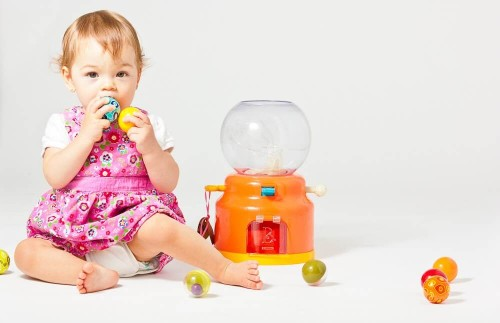
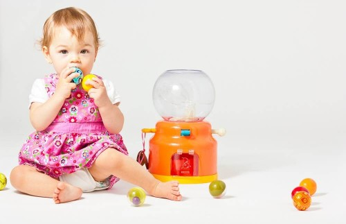
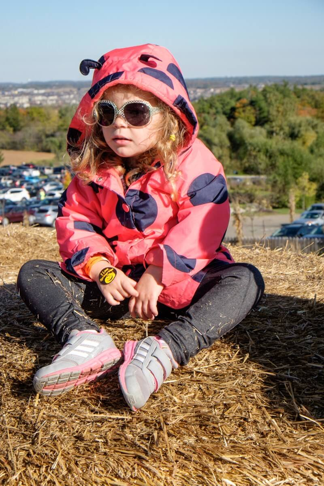
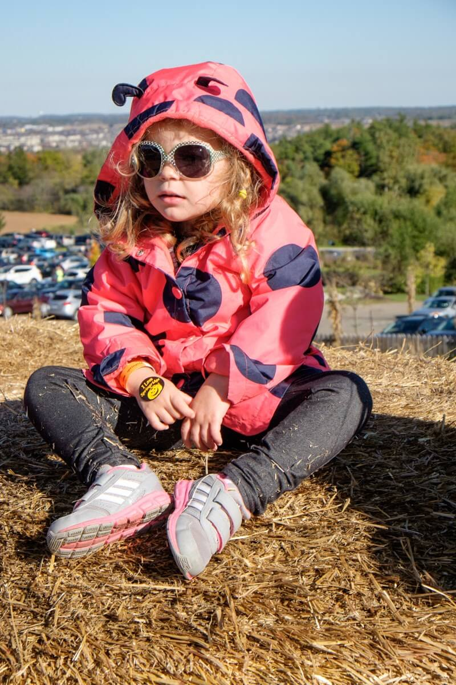
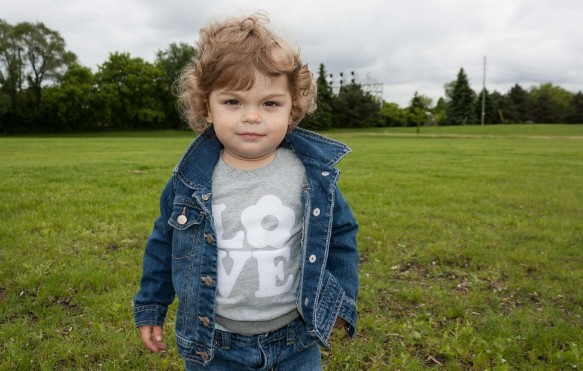
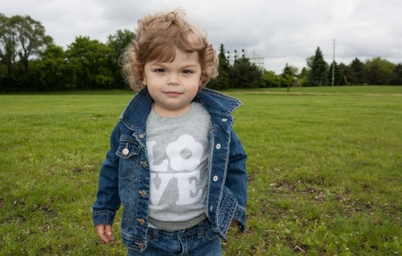
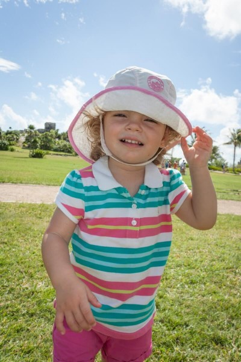
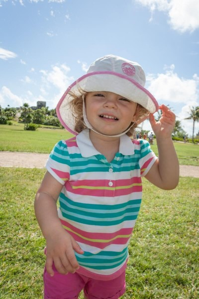

Me so far
My name is Bianca Arcila Stauber Muchachota Maravillosa Bonita Cheeks Tu. I was born on October 25, 2011, one month too early. I was super excited to meet mama and papa and start my adventures in this world.
I love to travel, and started traveling the world when I was only six months old to the picturesque city of Gaudi's marvels, Barcelona.
So far I have crossed Rialto bridge in Venice, drove through many tunnels in Croatia and walked on city walls of Dubrovnik. I have played in the sandy beaches of Mexico and Dominican Republic but my favorite place is Cuba.
I am a very active kid. Mommy and papa keep me busy with lots of fun activities like: swimming, soccer, basketball, rock climbing, skipping rope, hiking and play dates with my best friends Charlotte, Juliette, Maxy, Emma, Sophia, Matt and Sofia.
 

 



I am...
- 🗻 Rock climbing goat
- 🚵 Cycling extraordinaire
- 🍙 Skipping rope machine
- 🏃 Running cheetah
- ⛸️ Skating prrrrrr
- 🏊 Swimming Atlantian
- 📚 Reading owl
- ➕ Numbers cruncher
- 👩 Mommy's girl
 



 

Fun fact
I am 50% Romanian , 50% Colombian , 100% Canadian


Superpower
we need to find superpower